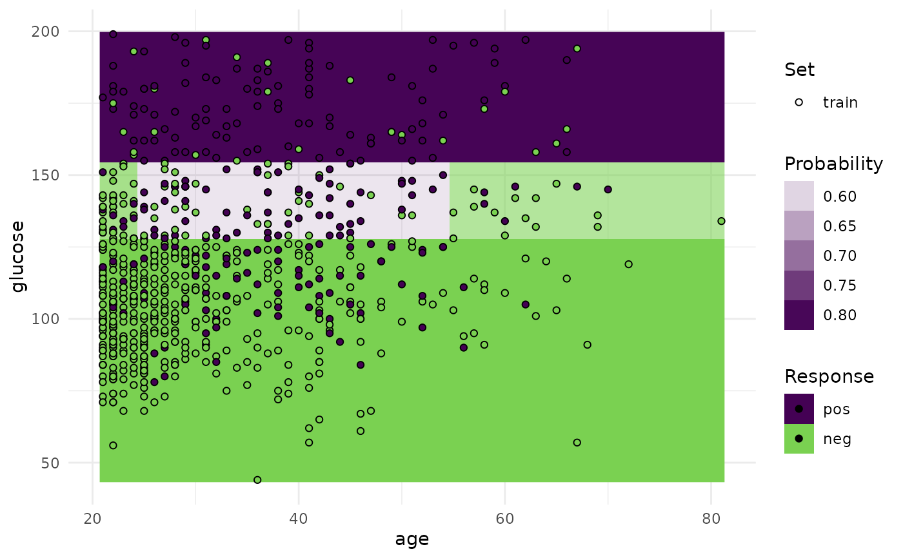

Visualizations for the mlr3::Prediction of a single mlr3::Learner on a single mlr3::Task.
For classification we support tasks with exactly two features and learners with
predict_typeset to"response"or"prob".For regression we support tasks with one or two features. For tasks with one feature we print confidence bounds if the predict type of the learner was set to
"se". For tasks with two features the predict type will be ignored.
Note that this function is a wrapper around autoplot.ResampleResult() for a temporary mlr3::ResampleResult using mlr3::mlr_resamplings_holdout with ratio 1 (all observations in the training set).
Arguments
- learner
- task
(mlr3::Task).
- grid_points
(
integer(1))
Resolution of the grid. For factors, ordered and logicals this value is ignored.- expand_range
(
numeric(1))
Expand the prediction range for numerical features.
Examples
# \donttest{
if (requireNamespace("mlr3")) {
library(mlr3)
library(mlr3viz)
task = mlr3::tsk("pima")$select(c("age", "glucose"))
learner = lrn("classif.rpart", predict_type = "prob")
p = plot_learner_prediction(learner, task)
print(p)
}
#> Warning: Removed 5 rows containing missing values or values outside the scale range
#> (`geom_point()`).

# }